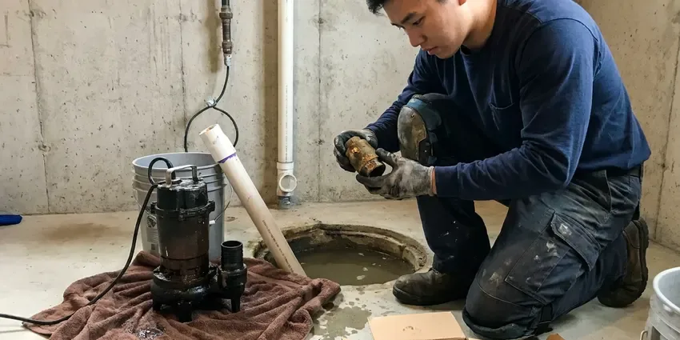
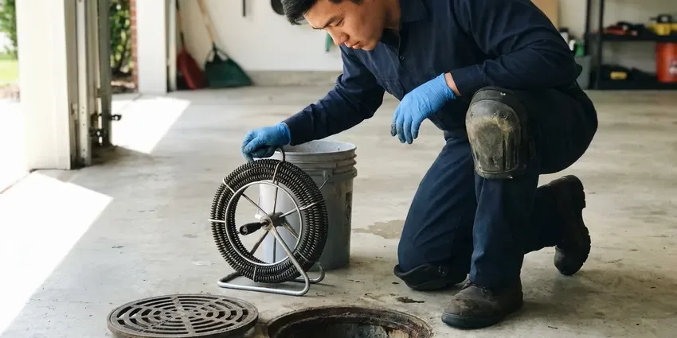

Hot Water Tank Maintenance in Prattville, AL
For dependable hot water tank maintenance in Prattville, AL, trust BRV Plumbing to keep your system in top condition.
- Fast, reliable service
- Licensed, insured plumbers
- Upfront pricing
- Guaranteed satisfaction

Expert Hot Water Tank Service in Prattville, AL.
Our skilled technicians are ready to provide thorough maintenance for all types of hot water tanks.
Professional Hot Water Tank Maintenance for Prattville, AL Homes
Regular hot water tank maintenance from BRV Plumbing helps prevent unexpected failures, saving you time and money. We serve homeowners across Prattville, AL, ensuring your hot water system operates smoothly year-round.
Our expertise includes:
- Sediment flushing and anode rod inspection.
- Pressure relief valve testing and replacement.
- Burner assembly cleaning and pilot light adjustment.

Additional Plumbing Maintenance Services in Prattville, AL
Our maintenance and specialty plumbing services in Prattville, AL protect your home year-round and extend the life of every system.



Sump Pump Maintenance in Prattville


Customers
Why Choose BRV Plumbing for Hot Water Tank Maintenance in Prattville, AL?
Choosing BRV Plumbing for your hot water tank maintenance means choosing peace of mind. Our experienced plumbers understand the specific needs of hot water systems in Alabama.
- Prevent Breakdowns, Regular maintenance helps catch small issues before they lead to complete system failure, avoiding inconvenient cold showers.
- Increase Efficiency, A well-maintained hot water tank uses less energy, which can lower your utility bills and reduce your carbon footprint.
- Extend Lifespan, Proper care and regular inspections can significantly prolong the operational life of your hot water tank, delaying costly replacements.
Citywide Coverage
BRV Plumbing proudly serves every neighborhood of Prattville, offering prompt and reliable hot water tank maintenance. No matter where you are in the city, our team is ready to provide expert service right to your doorstep.
Experienced Team
Our team of licensed plumbers has extensive experience with all major hot water tank brands and models. They undergo continuous training to stay updated on the latest maintenance techniques and local code requirements.
Safety-First Approach
Safety is paramount in all our hot water tank maintenance services. We adhere strictly to all local and state plumbing codes, ensuring every component is inspected and serviced to the highest safety standards.
Trusted Certified Prattville Plumbing Services Professionals
At BRV Plumbing, we take pride in providing certified plumbing services throughout Prattville, AL. Backed by recognized industry credentials, our experienced plumbers combine technical skill with genuine customer care. Whether it is repair, installation, or maintenance, we follow strict safety and quality standards to deliver lasting results you can trust.
Call Us Now PHCC Plumbing Contractor Recognition
PHCC Plumbing Contractor Recognition Better Business Bureau (BBB) Accreditation
Better Business Bureau (BBB) Accreditation Angi Certified Pro
Angi Certified Pro ISO 9001 Quality Management Certification
ISO 9001 Quality Management CertificationDependable Hot Water Tank Maintenance Services in Prattville, AL
Standard Hot Water Tank Flushing in Prattville
Sediment buildup is a common issue in hot water tanks, particularly in areas like Alabama with varying water hardness. Our standard flushing service removes these mineral deposits, which can reduce efficiency and lead to premature tank failure. We drain the tank completely, flush out all sediment, and refill it, ensuring clear water flow and improved heating performance. This routine service is crucial for extending the life of your unit.

Anode Rod Inspection and Replacement in Prattville, AL
The anode rod, often called the sacrificial rod, is vital for preventing corrosion inside your hot water tank. In Alabama's climate, water chemistry can vary, impacting the rod's lifespan. Our technicians inspect the anode rod for wear and recommend replacement if it's significantly corroded, typically every 3 to 5 years. Replacing a worn anode rod is a cost-effective way to protect your tank from rust and leaks, saving you from a full tank replacement.
Pressure Relief Valve Testing in Prattville
The temperature and pressure relief (T&P) valve is a critical safety device that prevents excessive pressure buildup in your hot water tank, which could lead to an explosion. Our maintenance includes testing this valve to ensure it opens and closes properly. If the valve is stuck or leaking, we will replace it immediately, adhering to all local plumbing codes in Prattville to guarantee your system operates safely.
Burner and Pilot Light Maintenance in Prattville, AL
For gas hot water tanks, proper burner and pilot light operation is essential for efficient heating. Our service includes cleaning the burner assembly to remove dust and debris that can impede combustion. We also check and adjust the pilot light, ensuring it ignites reliably. This attention to detail prevents common issues like intermittent hot water or complete heating failure, which can be frustrating for homeowners in Prattville, AL.
Electric Hot Water Tank Element Check in Prattville
Electric hot water tanks rely on heating elements to warm the water. During maintenance, our plumbers inspect these elements for signs of wear, corrosion, or burnout. We also check the thermostat settings and wiring connections to ensure they are functioning correctly and safely. This preventative check can identify failing elements before they stop heating altogether, preventing unexpected cold showers for your family in Prattville.
Water Heater Expansion Tank Service in Prattville, AL
Many modern plumbing systems in Alabama homes include an expansion tank connected to the hot water heater. This tank absorbs excess pressure created during the heating cycle, protecting your hot water tank and other plumbing fixtures. Our maintenance includes checking the expansion tank's air pressure and overall condition. Proper expansion tank function is key to preventing premature wear on your hot water tank and maintaining system integrity.
Emergency Hot Water Tank Troubleshooting in Prattville
Even with regular maintenance, sometimes unexpected issues arise. BRV Plumbing offers emergency troubleshooting for hot water tank problems in Prattville. Whether it's a sudden lack of hot water, strange noises, or a leak, our technicians are equipped to diagnose the problem quickly and provide immediate solutions. We understand the urgency of a broken hot water tank and strive to restore your comfort swiftly and efficiently.

Commercial Hot Water Tank Maintenance in Prattville, AL
Businesses in Prattville, AL rely heavily on consistent hot water for their operations. Our commercial hot water tank maintenance services are tailored to the higher demands of commercial units. We provide comprehensive inspections, flushing, and component checks to ensure your business avoids costly downtime due to hot water system failures. Keeping your commercial hot water tank in peak condition is vital for customer satisfaction and operational efficiency.
Hot Water Tank Maintenance Near Me in Prattville, AL
When you search for 'hot water tank maintenance near me' in Prattville, AL, BRV Plumbing is your reliable local choice. We prioritize prompt service, understanding that a well-functioning hot water system is essential for your daily comfort. Our local technicians are always ready to respond to your needs.
We are deeply familiar with the plumbing infrastructure and hot water tank requirements unique to homes and businesses across Prattville. This local expertise ensures that our maintenance services are not just effective, but also tailored to the specific conditions of our Alabama community.
BRV Plumbing at a Glance
- Fully licensed plumbing team covering Prattville, AL
- Same-day appointments and 24/7 emergency response
- Clear written estimates, no hidden fees
- 4.8-star rated by 549+ Alabama customers
Prattville Map
Prattville Information
- Population
- 39,318
- Area codes
- Local
- Service area
- Prattville and communities within 40 miles
- Nearby
- Montgomery, Auburn, Alabaster, Opelika
Regular hot water tank maintenance is vital for homes in Prattville, AL to combat sediment buildup from local water conditions and ensure efficient operation through the humid summers and cooler winters, preventing unexpected failures.
Expert Services
Trust our professionals for reliable BRV Plumbing solutions in Prattville, AL.
Our Specialized Plumbing Services in Prattville, AL
At BRV Plumbing, we provide a complete range of plumbing services across Prattville, AL. From leak detection to full system installations, our team ensures fast, precise, and affordable service for both residential and commercial properties. Explore our core services below:



Prattville drain services specialists

How Our Hot Water Tank Maintenance Process Works in Prattville, AL
Our hot water tank maintenance process is designed for thoroughness and efficiency, ensuring your system operates optimally.
Request a Quote
Contact us at (256) 391-9413 to schedule your hot water tank maintenance. We'll discuss your needs and provide a transparent quote upfront.
On-Site Inspection
Our technician arrives on time, performs a visual inspection of your hot water tank, and assesses its overall condition and any immediate concerns.
Thorough Maintenance
We then proceed with flushing sediment, checking the anode rod, testing safety valves, and inspecting all vital components, addressing any issues found.
Frequently Asked Questions About Hot Water Tank Maintenance in Prattville
The cost of hot water tank maintenance in Prattville, AL typically ranges from $100 to $250, depending on the tank type, age, and specific services required. This usually includes flushing, anode rod inspection, and safety valve checks. We provide upfront pricing before any work begins.
BRV Plumbing stands behind our work. While maintenance services generally don't have long-term warranties like new installations, we guarantee our workmanship for a specific period. Any parts replaced during maintenance will carry their manufacturer's warranty.
Our technicians are trained to service all major hot water tank brands, including Rheem, AO Smith, Bradford White, State, Kenmore, and more. We have the expertise to handle various models, whether gas or electric.
A typical hot water tank maintenance service usually takes about 1 to 2 hours. This includes draining, flushing, inspecting components, and testing safety features to ensure everything is in proper working order.
While some basic steps like flushing can be done by a homeowner, comprehensive maintenance, especially involving gas lines, electrical components, and pressure relief valves, should be left to a licensed plumber. Improper maintenance can lead to safety hazards or void warranties.
Routine hot water tank maintenance, such as flushing and inspections, typically does not require a permit in Prattville. However, if major components are replaced or the entire unit is swapped out, a plumbing permit may be necessary. Our team handles all necessary permit applications.
Key signs include strange noises like rumbling or popping from the tank, rusty or discolored hot water, a rotten egg smell, reduced hot water supply, or leaks around the base of the tank. If you notice any of these, it's time to call a professional.
Alabama's water, while not universally hard, can have mineral content that contributes to sediment buildup in hot water tanks. This sediment reduces efficiency and can damage heating elements or tank linings over time. Regular flushing is especially important in these areas.
What People Are Saying About Our Plumbing Experts?

Sofia M.
Two new toilets installed in one visit, no mess left behind, and the tech even adjusted a faucet he noticed was dripping. Fair pricing and really friendly.
Toilet Installation · Prattville, AL
Mark T.
When our office needed drain cleaning, BRV Plumbing provided quick, reliable service. The plumber arrived on time and made sure every drain flowed perfectly before leaving. Very satisfied.
Drain Cleaning · Hoover, ALLaura S.
I scheduled a water heater replacement, and the team made the process smooth and affordable. The new unit works perfectly, and they cleaned up after completing the job.
Water Heater Replacement · Opelika, AL
Emily R.
I called BRV Plumbing for plumbing repair, and the technician was fast, polite, and thorough. They explained the problem clearly and fixed it the same day. I will definitely hire them again. Highly recommended!
Plumbing Repair · Vestavia Hills, AL
James P.
Our commercial plumbing system had a leak under the sink, and BRV Plumbing handled it professionally. The plumbers arrived quickly and restored everything without disruption to our customers.
Commercial Plumbing · Prattville, AL
Patricia H.
We had a slab leak that two other companies could not find. BRV Plumbing located it in under an hour, explained our options, and the price matched the quote to the dollar.
Slab Leak Repair · Prattville, AL